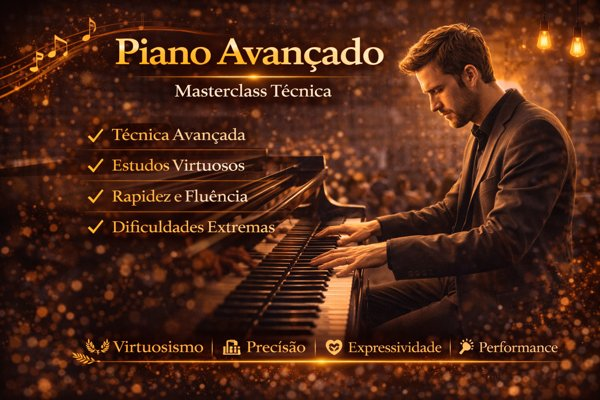
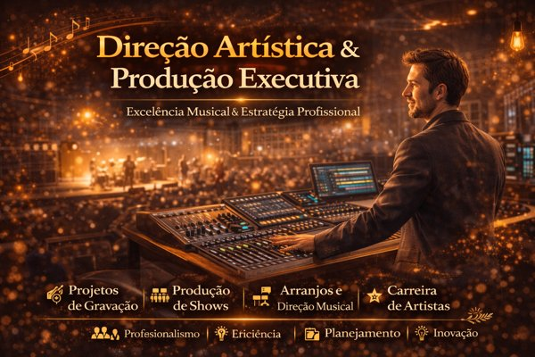
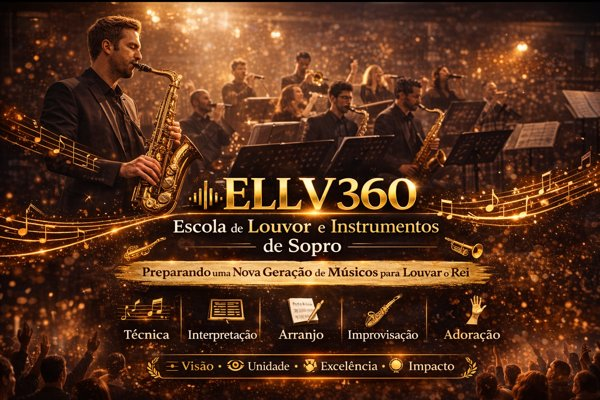
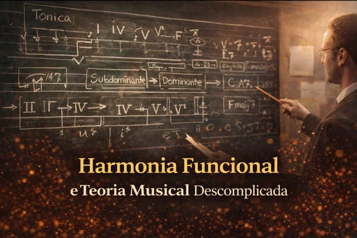
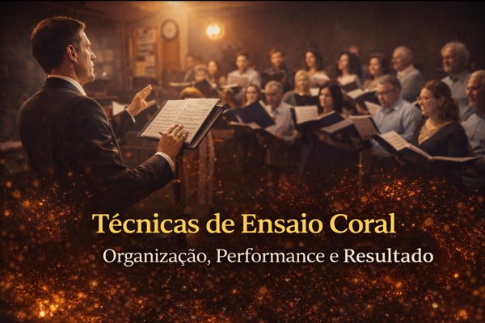
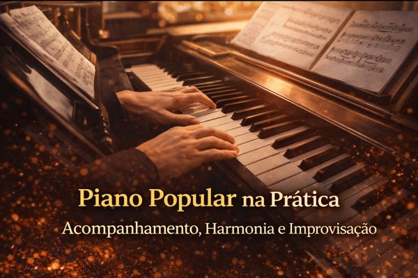

Palestras & Workshops
Temas exclusivos desenvolvidos para formação técnica e artística de músicos, educadores, líderes de louvor e estudantes. Explore os principais assuntos e escolha o que melhor atende à sua necessidade. Cada workshop pode ser adaptado em duração e formato conforme o contexto.

Regência Coral Aplicada à Música Popular e Sacra
Técnicas de Ensaio Coral: Organização, Performance e Resultado
Piano Popular na Prática: Acompanhamento, Harmonia e Improvisação
Improvisação Musical Aplicada ao Piano e à Banda

Harmonia Funcional e Teoria Musical Descomplicada
Arranjo Musical para Bandas, Corais e Ministérios de Música
Prática de Banda: Entrosamento, Linguagem e Performance
Educação Musical Contemporânea: Metodologias Ativas e Criativas
Música e Tecnologia: Ferramentas Digitais para Músicos e Educadores

Inteligência Artificial Aplicada à Música

Produção Musical Independente: Do Home Studio à Distribuição Digital
Direção Musical e Produção Artística de Projetos Musicais
Formação de Professores de Música e Coordenadores Pedagógicos
Música, Emoção e Cognição: Fundamentos e Aplicações
Música e Espiritualidade: Excelência Musical no Contexto Cristão

Arranjos e Estruturação Musical para Louvor e Adoração

O Músico no Século XXI: Carreira, Mercado e Sustentabilidade Artística
